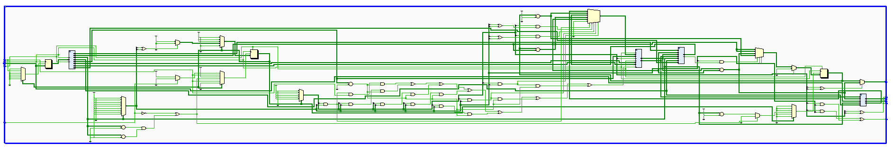

FPGA? FPG Quoi?
MORVAN Pierre
WHO AM I?

Pierre Morvan @Zenika Paris
@ryarnyah
"Du Java mais pas que…"
Par contre, je ne suis pas un développeur hardware non plus !
JE NE VAIS PAS VOUS PARLER DE ça!

NI DE ça!

FPGA (Field Programmable Gate Array)?

USE-CASES (subset)
- Prototypage microcontrôleur
- Composant à usage spécifique (co-processeur AES, compression vidéo, faible production de composants, etc)
- Une très grande quantité d'IO <=> parallélisation de traitements possible.
- Utilisation dans des contextes spécifiques d'IOT (microcontrôleur avec TCP intégré)
- Cartes réseau TLS (Oui, ça existe.)
- Processeur spécifique Java (Oui, il y en a aussi.)
- Accélération de certaines partie de code (ex en Java avec TornadoVM)
- Pourquoi pas un CPU orienté WASM? :)
ASICS VS FPGA
ASICS (Application Specific Integrated Circuit)
- Votre CPU en est un.
- Plus coûteux <=> nécessite souvent une chaîne de production dédiée.
- Moins coûteux à l'unité.
- Upgrade impossible ou doit être pris en compte lors du design <=> implique une logique similaire aux FPGAs.
- Plus performant (pas de LUTs, placement efficace, etc).
Pour les accros du retro-gaming: MisTER

- Retro-gaming reproduisants les CPUs/GPUs/FPUs
- Utilisation d'un matériel "cheap"
- Permet de reproduire les "bugs" nécessaires à certains jeux.
ET C'EST QUOI UN SIGNAL?

ET L'HORLOGE? COMME MA MONTRE?

ARCHITECTURE FPGA

üîçLUT (LOOK UP TABLES)

- Composant permettant de reproduire le comportement de plusieurs éléments, dont des portes AND, OR, etc.
- Cœur même de votre FPGA.
| A | B | → | A AND B | A OR B | A XOR B |
|---|---|---|---|---|---|
| 0 | 0 | 0 | 0 | 0 | |
| 0 | 1 | 0 | 1 | 1 | |
| 1 | 0 | 0 | 1 | 1 | |
| 1 | 1 | 1 | 1 | 0 |
üîçMUX (MULTIPLEXER)

- Permet de selectionner des Inputs en fonction d'un signal.
üîçD Flip-flop

- Permet de stocker des données.
| CLK | D | → | Q | ~Q |
|---|---|---|---|---|
| 0 | 0 | Pas de changement | Pas de changement | |
| 0 | 1 | Pas de changement | Pas de changement | |
| 1 | 0 | 0 | 1 | |
| 1 | 1 | 1 | 0 |
COMPILATION?

Essentiellement des outils propriétaires associés au constructeur :
- Vivado (Xilinx)
- Quartus (Intel)
- …
Mais certaines alternatives open-source voient le jour :
- Yosys Open SYnthesis Suite
- F4PGA (qui intègre Yosys en mode le GCC du FPGA)
ET LES TESTS?

DOUTER SUR DU HARDWARE, C'EST JUSTE DU SUICIDE !
ET LES TESTS?
Plusieurs types de tests sont applicables :
- Formel (avec par exemple symbiosys)
`ifdef FORMAL initial assume (RST); reg f_past_valid; initial f_past_valid = 1'b0; always @(posedge clk) f_past_valid <= 1'b1; `endif
- Unitaire: simulation + tests signal (avec un couple de test bench + une analyse des résultats <=> par exemple avec Cocotb)
@cocotb.test() async def check_instr_decoder_decode(dut): """ Test that instr is decoded successfully """ clock = Clock(dut.clk, 10, units="us") cocotb.start_soon(clock.start()) ...
- Matériel: leds, debugger chip, etc
ET ça SE SIMULE TOUT ça?
Plusieurs simulateurs existent, notamment Verilator (C++) qui permet d'avoir un simulateur "rapide":
int main(int argc, char **argv) { Verilated::commandArgs(argc, argv); tb = new BLINKY_TB(); tb->reset(); while (!tb->done()) { tb->tick(); } tb->close(); exit(0); }
Mais il en existe d'autres (propriétaires ou non):
- iCarus verilog
- Verilog-XL
- ModelSIM
- …
DéMO: BLINKY
Dans cette démo nous allons voir un module blinky similaire à celui-ci et l'uploader sur le FPGA.
module top ( input logic CLK, input logic RST, output logic [15:0] LEDS ); logic [15:0] counter = 0; always @(posedge CLK) begin counter <= counter + 1; if (RST) counter <= 0; end assign LEDS = counter; endmodule
DéMO: BLINKY (Schéma)

DéMO: BLINKY (Compilé)

DEMO
CPU?

RISC vs CISC
- Taille variable ou non des instructions.
- Complexité des instructions.
- Intel transforme en interne les instructions CISC en instructions RISC !
| RISC (Reduced Instruction Set Computer) | CISC (Complex Instruction Set Computer) |
|---|---|
| PowerPC | x86 |
| MIPS | |
| SPARC | |
| ARM |
DéMO: Un CPU RISC
Dans cette démo nous utiliserons un CPU RISC-V avec le jeu d'instruction RV32i (le plus simple) développé pour l'occasion :)
- CPU 32 bits.
- Pas de supports des nombres flottants.
- SOC (System on chip) avec des LEDs, une mémoire RAM de 4k, de l'UART (port série).
- Un firmware minimal permettant d'exécuter d'autres programmes.
- Loin d'être performant !
- Il y a plus que sûrement des bugs !
- Mais on va voir ensemble que ça marche!
DEMO: Un CPU RISC (Schéma)

DEMO: Un CPU RISC (Compilé)

DEMO
MERCI
Pour aller plus loin!
- Nandland: https://nandland.com/
- From Blinker to RISCV: https://github.com/BrunoLevy/learn-fpga/tree/master/FemtoRV/TUTORIALS/FROM_BLINKER_TO_RISCV
- ZipCPU (blog + CPU): https://zipcpu.com/
- The SErial RISC-V CPU: https://github.com/olofk/serv
- Verilator: https://www.veripool.org/verilator/
- F4PGA: https://f4pga.org/
- RISC-V: https://riscv.org/